세종성베드로성당
홈페이지 운영을 시작했을 때 본당 사목과 운영이 어떻게 거들어질 수 있는지, 준비된 기능과 동작 시나리오를 정리해 말씀드리고자 합니다.
2026 · A · D ·
주보 하나 올리면,
나머지는 시스템이 거들 수 있습니다.
운영을 시작했을 때, 매주의 주보가 홈페이지의 여러 자리로
자연스럽게 흘러 들어가도록 준비되어 있습니다.
홈페이지는 본당 사목과 운영을 거드는 보조 수단으로 자리합니다.
본당의 일들은 성전과 공동체 안에서 이루어지고, 홈페이지는 그 일들을 알리고 기록하고 다시 찾을 수 있게 돕는 자리에 두려고 합니다.
이 자료는 홈페이지 운영을 시작했을 때 하게 될 일을 차분히 정리해 말씀드리는 것을 목적으로 합니다.
홈페이지가 거들 수 있는 여섯 가지 자리
매주 본당에서 반복되는 일들이 홈페이지 운영을 통해 어떻게 거들어질 수 있는지 짚어 봅니다.
함께 준비 중인 카카오 채널 연동도 이어서 소개드립니다.
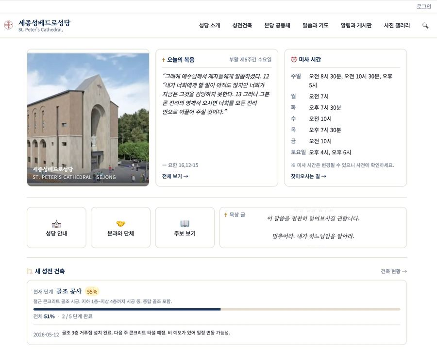
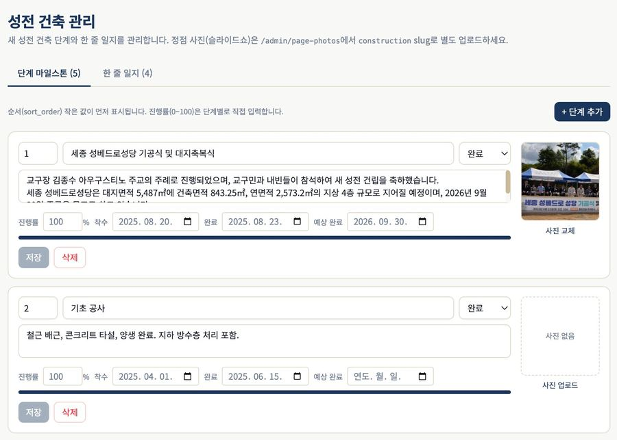
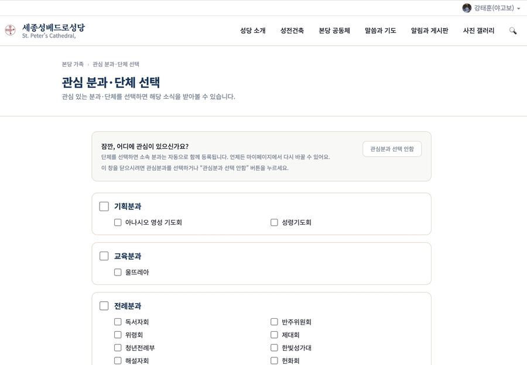
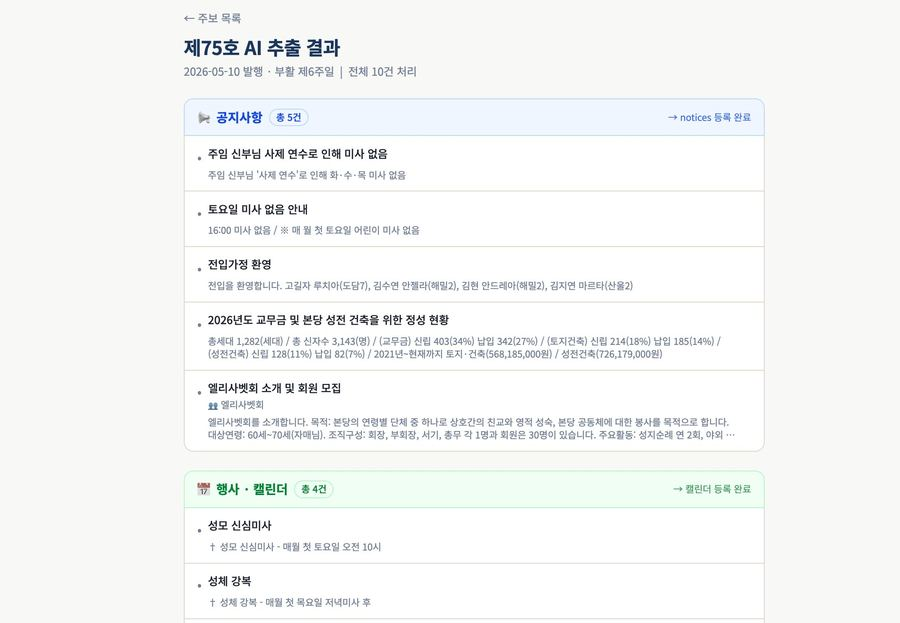
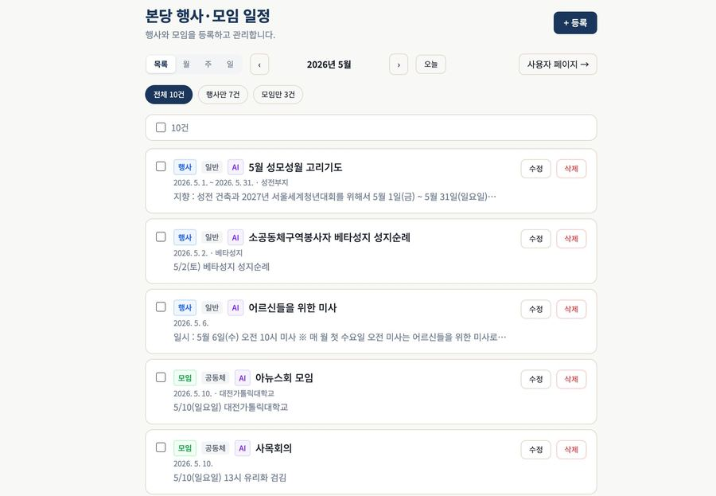
홈페이지에 맡겨질 정보가 안심하고 머무를 수 있는 환경을 마련해 두었습니다.
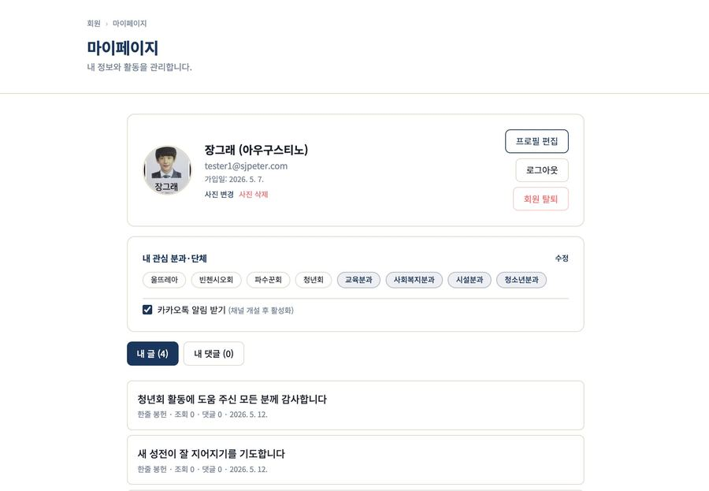
운영을 시작했을 때, 홈페이지가
실제로 어떻게 움직일지 미리 살펴봅니다
회원이 홈페이지에 가입한 순간부터 카카오 알림을 받기까지의 네 단계로 동작할 예정입니다.
카카오 알림은 채널 개설 후 활성화되는 흐름으로 준비되어 있습니다.
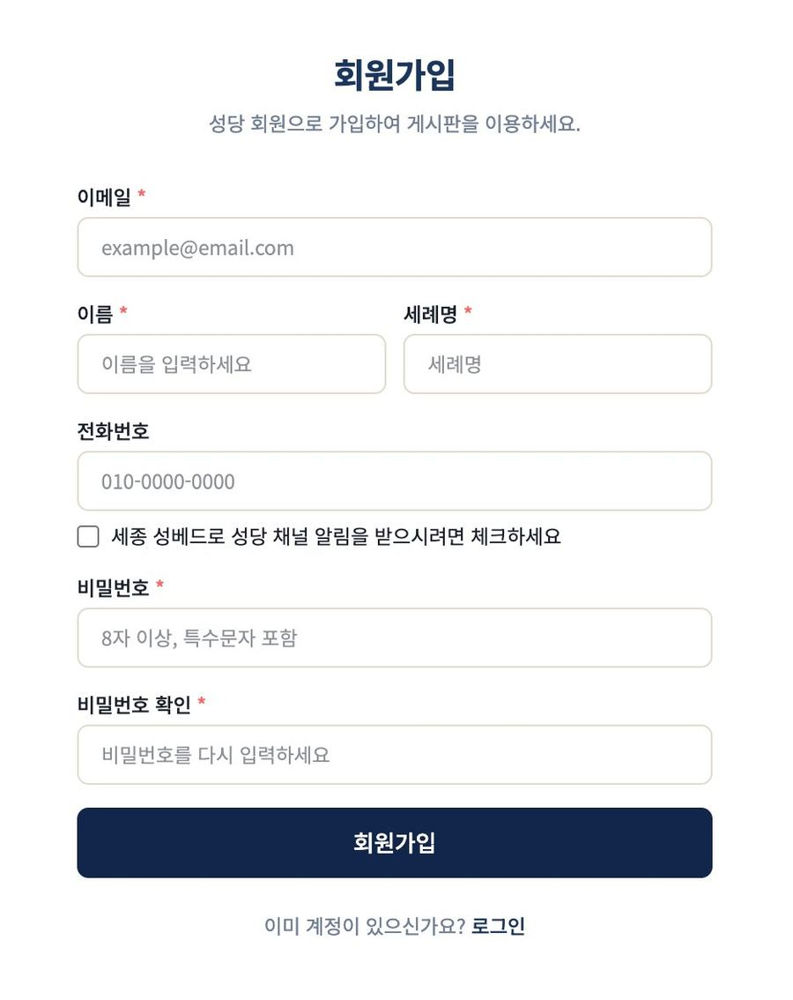
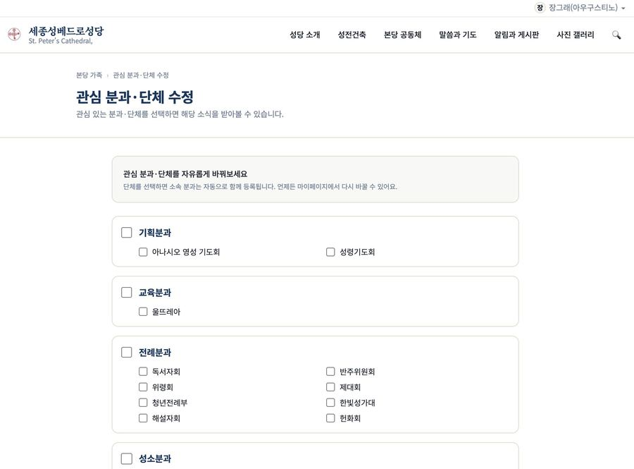
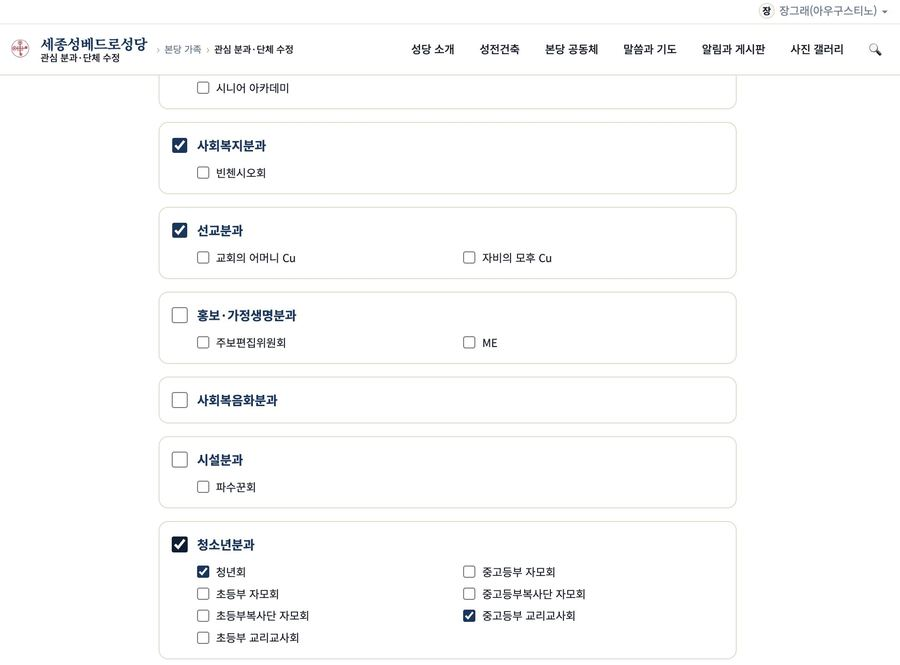
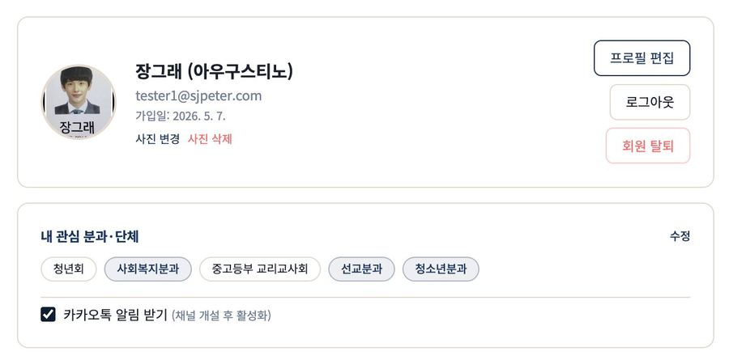
업로드한 주보 한 부가 홈페이지의 여러 자리로 정리되어 들어가는 네 단계로 동작할 예정입니다.
PDF 원본은 그대로 보관되어 언제든 다시 열어볼 수 있도록 마련되어 있습니다.
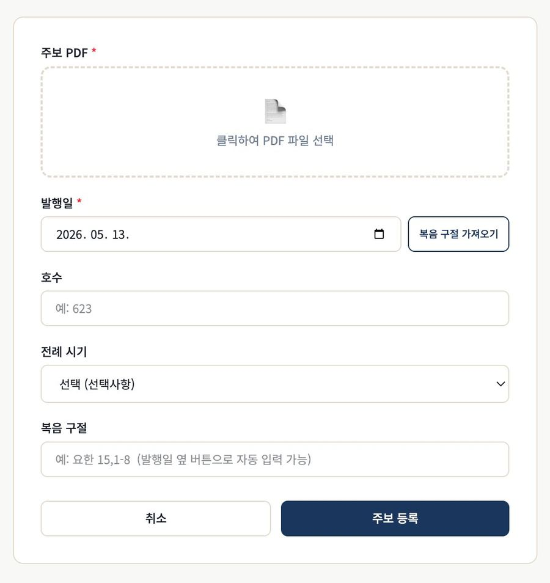
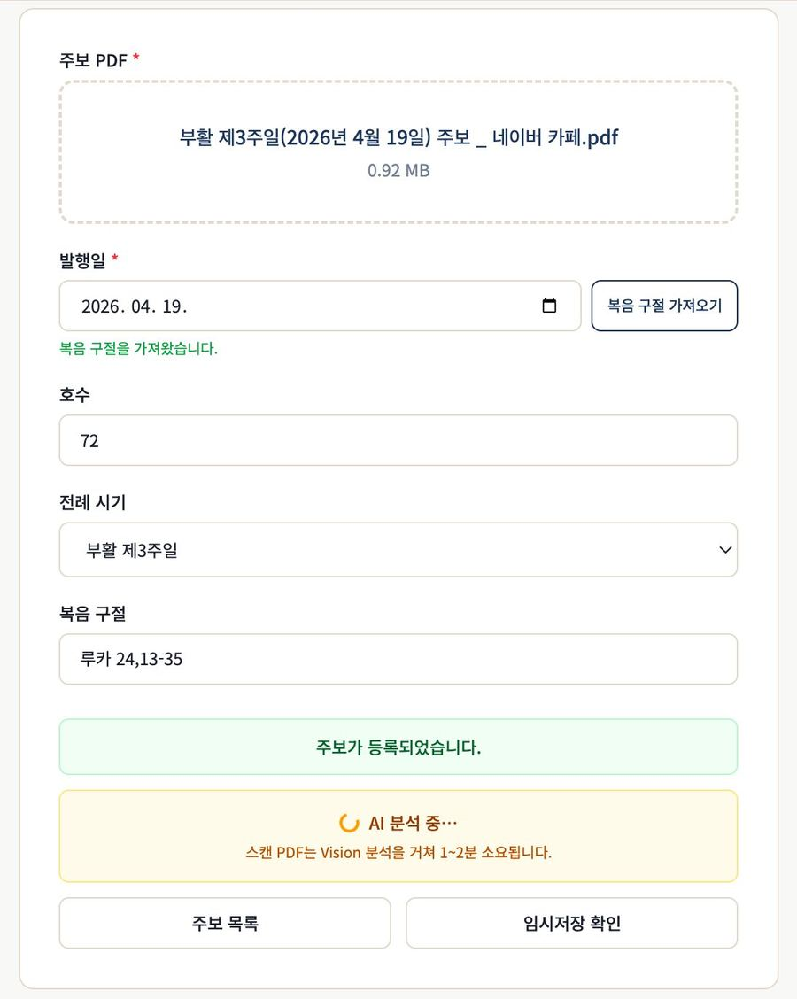
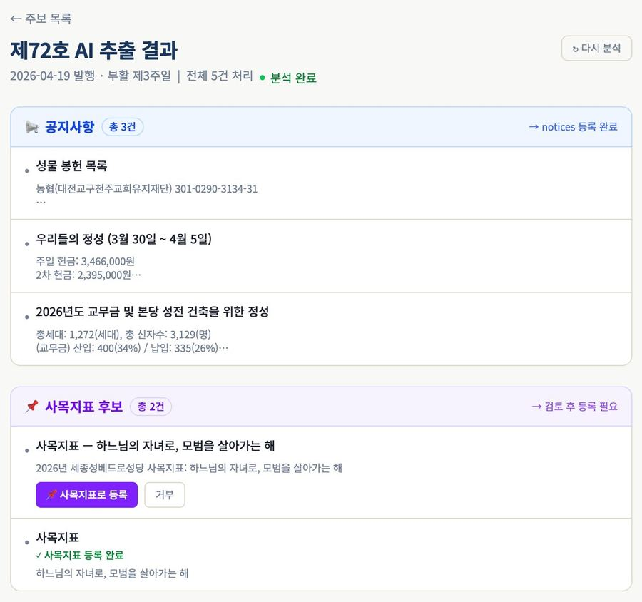
운영을 시작하기 전 함께 결정해 두면 좋을 사항들
본당 카카오 채널이 개설되면, 회원이 선택한 관심 분과·단체의 공지와 일정이 채널로 안내될 수 있도록 준비되어 있습니다.
현재 회원 화면에는 알림 받기 동의가 이미 마련되어 있어, 채널 개설이 끝나는 대로 활성화될 수 있습니다.
이 사항들이 정해지면, 홈페이지 운영은 매주 같은 자리에서 같은 흐름으로 거들 수 있게 됩니다.
| 구분 | 운영을 시작했을 때 홈페이지가 거들게 될 일 |
|---|---|
| 매일 | 오늘의 말씀과 묵상이 첫 화면에 자리하게 됩니다 |
| 매주 | 주보 PDF 한 부 업로드 → 공지·행사·모임 자동 정리 |
| 회원 | 관심 분과·단체 선택 → 카카오 채널 알림 (개설 후) |
| 기록 | 건축공사일지 · 본당 역사 저장소로 누적 |
홈페이지는 본당 사목과 운영을 거드는 보조 수단으로 자리합니다.
주보 하나 올리면,
나머지는 시스템이 거들 수 있습니다.
세종성베드로성당 · 2026